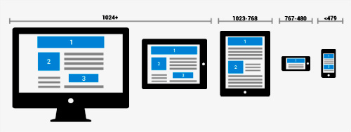
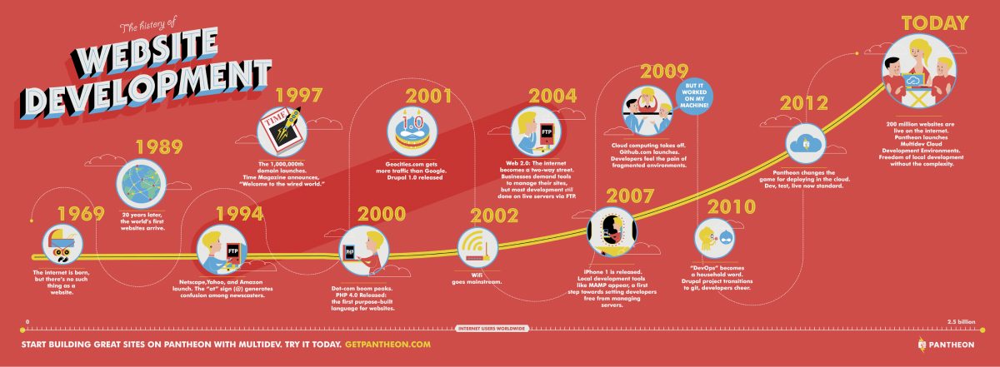
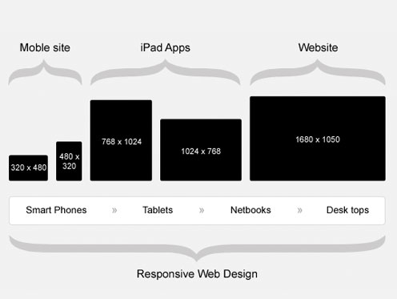

RESPONSIVE DESIGN CON BOOTSTRAP
Un vistaso a la web actual
Integrantes
Vásquez López Alfredo Omar
Avendaño Avalos Luis Ángel
Acosta Carrasco Carlos Santiago
Índice
Presentación
Justificación
Liberrias
Bootstrap
Aplicaciones
Conclusiones
Justificación

¿Qué es el Diseño Responsivo?
El diseño responsivo es una técnica de diseño web que busca adaptar el contenido y la estructura de un sitio web a diferentes dispositivos y tamaños de pantalla, para brindar una experiencia de usuario óptima.
¿Porqué deberiamos de usarlo?
El diseño responsivo es una técnica de diseño web que busca adaptar el contenido y la estructura de un sitio web a diferentes dispositivos y tamaños de pantalla, para brindar una experiencia de usuario óptima.
Introducción
Antecedentes del Responsive Design
El Responsive Design surge como una respuesta a la necesidad de adaptar los diseños web a la gran variedad de dispositivos y tamaños de pantalla existentes. Anteriormente, se utilizaban técnicas como la creación de sitios web móviles independientes o la adaptación manual del diseño para cada dispositivo, lo cual resultaba costoso y poco eficiente.
Historia del Responsive Design
El término "Responsive Design" fue acuñado por Ethan Marcotte en su artículo "Responsive Web Design" publicado en A List Apart en 2010. Desde entonces, el diseño responsivo se ha convertido en una práctica común en la creación de sitios web y ha evolucionado constantemente para adaptarse a las nuevas tecnologías y tendencias.
Estándar de la Web
El estándar de la web es un conjunto de tecnologías y especificaciones desarrolladas por el World Wide Web Consortium (W3C) con el objetivo de asegurar la interoperabilidad de los sitios web en diferentes plataformas y navegadores. El uso de estándares como HTML, CSS y JavaScript permite la creación de sitios web que se pueden visualizar de manera consistente en una gran variedad de dispositivos.
Actualidad del Responsive Design
Hoy en día, el diseño responsivo es un requisito fundamental en la creación de sitios web, ya que la mayoría de los usuarios acceden a la web a través de sus dispositivos móviles. Además, el desarrollo de tecnologías como la inteligencia artificial y el Internet de las cosas (IoT) abre nuevas posibilidades para el diseño responsivo.
Ventajas del Diseño Responsivo
- Mejora la experiencia de usuario en dispositivos móviles
- Aumenta la visibilidad en motores de búsqueda
- Facilita la gestión de contenidos
- Reduce los costos de desarrollo y mantenimiento
Librerías

Mobile First
Una estrategia de diseño responsivo que se enfoca en diseñar primero para dispositivos móviles, para luego adaptar el diseño a pantallas más grandes.

Breakpoints
Puntos de quiebre en el diseño responsivo, donde se ajusta el diseño para adaptarse a diferentes tamaños de pantalla.

Media Queries
Una técnica de diseño responsivo que permite aplicar diferentes estilos CSS a un sitio web en función del tamaño de pantalla del dispositivo.
Diseño fluido vs. diseño fijo
Un diseño fluido se adapta a diferentes tamaños de pantalla, mientras que un diseño fijo tiene un ancho y altura específicos y no cambia en diferentes dispositivos.
El diseño fluido es más recomendable para sitios web responsivos, ya que permite una experiencia de usuario más óptima en diferentes dispositivos.

Bootstrap
Alerts
Los alerts son útiles para mostrar mensajes al usuario, como advertencias o confirmaciones.
Buttons
Los botones son una parte esencial de cualquier sitio web, y Bootstrap ofrece muchos estilos y tamaños diferentes.
Modal
Los modales son ventanas emergentes que se usan para mostrar información o solicitar acciones al usuario.
Título del Modal
Spinners
Los spinners son indicadores visuales que se usan para mostrar que una operación está en progreso.